Pregunta Verdadero-Falso
Responde Verdadero(V) o Falso (F), segun corresponda
Retroalimentación
Verdadero
Retroalimentación
Falso
el resultado es 56
Retroalimentación
Falso
C10,3 es lo mismo que C10,7
Retroalimentación
Verdadero
En este apartado, trabajaremos los elementos necesarios que necesitas conocer para poder introducirte en el fascinante mundo de variable aleatoria discreta, distribuciones de probabilidad de variables aleatorias discretas y Distribución Binomial, estos son:
Haremos un pequeño repaso de cada una de ellas y a partir de aquí podrás relacionar lo visto en cursos anteriores con esta nueva materia.
los números factoriales
En algunos problemas de matemática se nos presentan multiplicaciones de números naturales sucesivos tal como:
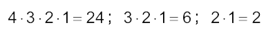
Para abreviar estas expresiones, se usa una notación especial llamada notación factorial y nos denota las multiplicaciones sucesivas de n hasta 1 y se define como:
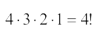Se lee“cuatro factorial”
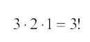 Se lee “tres factorial”
En términos generales:
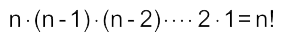 Se lee “n factorial”
Propiedades:
a) Se puede calcular para n natural
Ejemplo: 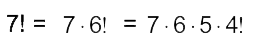
b) 0! = 1
Ejemplos:
1) 5! = 5· 4· 3· 2· 1 = 120
2) 4! 3! = (4 · 3· 2 · 1) · (3 · 2 · 1) = (24)·(6) = 144
3) 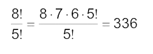
4) 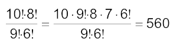
5) 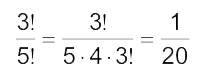
Sean Ahora m y n dos números enteros positivos, con m ≤ n, definiremos los números combinatorios, como sigue:
Otra forma de escribir dichos números es usando la siguiente notación:
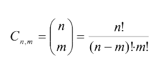
Los números combinatorios cumplen propiedades muy interesantes, de entre las cuales citamos:
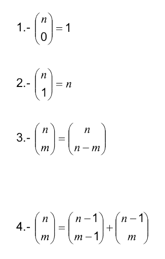
Responde Verdadero(V) o Falso (F), segun corresponda
Verdadero
Falso
el resultado es 56
Falso
C10,3 es lo mismo que C10,7
Verdadero
Obra publicada con Licencia Creative Commons Reconocimiento Compartir igual 4.0
Principio Multiplicativo
Si se desea realizar una actividad que consta de r pasos, en donde el primer paso de la actividad a realizar puede ser llevado a cabo de N1 maneras o formas, el segundo paso de N2 maneras o formas y el r-ésimo paso de Nr maneras o formas, entonces esta actividad puede ser llevada a efecto de:
N1 x N2 x ..........x Nr maneras o formas
El principio multiplicativo implica que cada uno de los pasos de la actividad deben ser llevados a efecto, uno tras otro.
Ejemplos:
1) Una persona desea construir su casa, para lo cual considera que puede construir los cimientos de su casa de cualquiera de dos maneras (concreto o block de cemento), mientras que las paredes las puede hacer de adobe, Madera o ladrillo, el techo puede ser de formalita o lámina galvanizada y por último los acabados los puede realizar de una sola manera ¿cuántas maneras tiene esta persona de construir su casa?
Solución:
Considerando que r = 4 pasos
N1= maneras de hacer cimientos = 2
N2= maneras de construir paredes = 3
N3= maneras de hacer techos = 2
N4= maneras de hacer acabados = 1
N1 x N2 x N3 x N4 = 2 x 3 x 2 x 1 = 12 maneras de construir la casa
Ejemplo 2
¿Cuántos números telefónicos es posible diseñar, los que deben constar de seis dígitos tomados del 0 al 9?
Solución:
9 x 10 x 10 x 10 x 10 x 10 = 900.000 números telefónicos
Ejemplo 3: ¿De cuántas maneras diferentes podrá vestirse un joven que tiene 3 camisas diferentes, 4 pantalones y 2 pares de calzado?
Solución:
3 x 4 x 2 = 24 maneras diferentes
Un restaurante tiene una carta que consta de cuatro primeros platos y tres segundos. ¿Cuántos menús formados por dos platos, uno del primer grupo y otro del segundo, se pueden confeccionar?

¿Cuántos grupos de seis cartas se pueden formar con una naipe ingles de 52 cartas, en los siguientes casos?
1. Se extrae una carta y se devuelve a la baraja, así sucesivamente hasta extraer las seis cartas.
2. Se extrae una carta y no se devuelve a la baraja, esta acción se realiza de forma sucesiva hasta obtener el grupo de seis cartas.

Para enviar un artículo al mercado pasa por tres controles de calidad, en cada uno se inspecciona una cierta particularidad y se anota su conformidad; en el primer control se debe aprobar 1 de los 4 exámenes disponibles que hay, en el segundo control 1 de 3 exámenes, y en el tercer control 1 de los 2 exámenes que hay. ¿De cuántas maneras se puede controlar la calidad de un producto?

Obra publicada con Licencia Creative Commons Reconocimiento Compartir igual 4.0
Si se desea llevar a efecto una actividad, la cual tiene alternativas para ser realizada, donde la primera de esas alternativas puede ser realizada de M maneras o formas, la segunda alternativa puede realizarse de N maneras o formas ..... y la última de las alternativas puede ser realizada de W maneras o formas, entonces esa actividad puede ser llevada a cabo de:
M + N + .........+ W maneras o formas
Ejemplo:
Una persona desea comprar una lavadora de ropa, para lo cual ha pensado que puede seleccionar de entre las marcas Whirpool(W), Mademsa(M) y General Electric (GE), cuando acude a hacer la compra se encuentra que la lavadora de la marca W se presenta en dos tipos de carga ( 8 u 11 kilogramos), en cuatro colores diferentes y puede ser automática o semiautomática, mientras que la lavadora de la marca M, se presenta en tres tipos de carga (8, 11 o 15 kilogramos), en dos colores diferentes y puede ser automática o semiautomática y la lavadora de la marca GE, se presenta en solo un tipo de carga, que es de 11 kilogramos, dos colores diferentes y solo hay semiautomática. ¿Cuántas maneras tiene ésta persona de comprar una lavadora?
Solución:
M = Número de maneras de seleccionar una lavadora Whirpool
N = Número de maneras de seleccionar una lavadora de la marca Mademsa
W = Número de maneras de seleccionar una lavadora de la marca General Electric
M = 2 x 4 x 2 = 16 maneras
N = 3 x 2 x 2 = 12 maneras
W = 1 x 2 x 1 = 2 maneras
Entonces:
M + N + W = 16 + 12 + 2 = 30 maneras de seleccionar una lavadora
¿Cómo podemos distinguir cuando hacer uso del principio multiplicativo y cuando del aditivo?
Es muy simple, cuando se trata de una sola actividad, la cual requiere para ser llevada a efecto de una serie de pasos, entonces haremos uso del principio multiplicativo y si la actividad a desarrollar o a ser efectuada tiene alternativas para ser llevada a cabo, haremos uso del principio aditivo.
Para viajar de Santiago a Concepción se puede optar por avión, autobús o tren; existen tres rutas para el avión, cuatro para el autobús y dos para el tren. ¿Cuántas rutas hay para viajar?
Se llaman permutaciones de n objetos a las diferentes maneras en que sepueden ordenar esos n objetos; todas las permutaciones constan de losmismos n elementos, pero se consideran diferentes, por el orden en que se colocan éstos. Podemos encontrar distintos tipos de permutaciones:
Permutaciones SIN repetición:
Las permutaciones sin repetición de n elementos se definen como las distintas formas de ordenar todos esos elementos distintos, por lo que la única diferencia entre ellas es el orden de colocación de sus elementos.
El número de estas permutaciones es : Pn = n!
Ejemplo: De cuántas maneras distintas se pueden ordenar 5 amigos para tomar una foto, de modo que estos queden en linea.
En este ejemplo siempre nos importara el orden en que queden, ya que uno a la derecha o a la izquierda de otro será un orden distinto. En conclusión el número de ordenes distintos para que estos amigos se tomen la foto será P5 =5! = 120. Lo que indica que hay 120 posibilidades distintas de fotos para este grupo.
Permutaciones CON repetición:
Llamamos a las permutaciones con repetición de n elementos tomados de a en a, de b en b, de c en c, etc, cuando en los n elementos existen elementos repetidos (un elemento aparece a veces, otro b veces, otro c veces, etc) verificándose que a+b+c+...=n.
El número de estas permutaciones es:
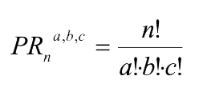
Ejemplo: ¿Cuántos números de 6 cifras se pueden formar si en ellos siempre hay 1 uno, 2 dos y 3 tres?
En este ejemplo nos piden que formemos números donde hay algunos que se repiten, algunos de los posibles números podrían ser: 122333, 212333, 332123, etc.
Como vemos hay elementos que se repiten por ende estamos frente a una permutación con repetición por lo que la cantidad de palabras distintas estará dado por:
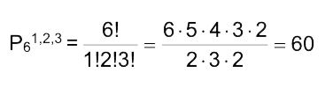
Permutaciones Circulares:
Hasta ahora hemos visto permutaciones lineales, en ellas, los elementos se disponen en una fila que tiene principio y fin.
Una situación diferente es la que se nos presenta al permutar, por ejemplo, objetos que se ordenan en forma circular.
Se llaman permutaciones circulares de n objetos a las diferentes maneras en que se pueden colocar esos n objetos alrededor de un círculo; en este tipo de permutaciones, lo que importa son las posiciones relativas de los objetos con respecto a ellos mismos y no las posiciones absolutas de los objetos en el círculo.
El número total de permutaciones circulares de n elementos distintos es: Pn(circulares) = (n - 1)!
Ejemplo: De cuántas maneras distintas se pueden sentar en una mesa redonda 7 personas.
Como nos dicen que deben sentarse en una mesa redonda la respuesta viene dada por una permutación circular, en este caso será P7(circular) = (7 - 1)! = 6! = 720 posibilidades distintas de sentarse en dicha mesa.
Las variaciones sin repetición de n elementos tomados de p en p se definen como las distintas agrupaciones formadas con p elementos distintos, eligiéndolos de entre los n elementos de que disponemos, considerando una variación distinta a otra tanto si difieren en algún elemento como si están situados en distinto orden.
El número de variaciones que se pueden construir se puede calcular mediante la fórmula:

Las variaciones con repetición de n elementos tomados de p en p se definen como las distintas agrupaciones formadas con p elementos que pueden repetirse, eligiéndolos de entre los n elementos de que disponemos, considerando una variación distinta a otra tanto si difieren en algún elemento como si están situados en distinto orden.
El número de variaciones que se pueden construir se puede calcular mediante la fórmula: 
Ejemplos
Como podemos ver en este caso nos preguntas por cifras de 3 dígitos que no se pueden repetir por lo que estamos frente a una variación sin repetición por lo que se calcularía como sigue:
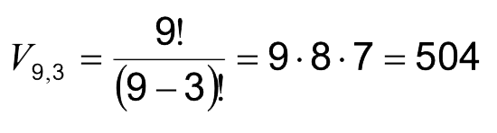
Por lo que podemos concluir que se pueden formar 504 números de 3 cifras distintas utilizando los dígitos del 1 al 9.
2. Con las letras del alfabeto español (25 letras) ¿Cuántas palabras (con o sin sentido) de 6 letras distintas pueden formarse?
En este ejemplo lo que se pide es que calculemos la cantidad de palabras de 6 letras que podemos formar con las letras del alfabeto (25 letras), teniendo la posibilidad de reptir las letras ya que en ninguna parte nos dicen que no sea así, por lo que el calculo sería de la siguiente manera:
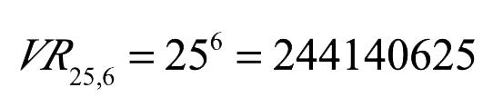
Lo que nos indica que podemos formar 244.140.625 palabras distintas de 6 letras con las letras del abecedario.
¿De cuántas maneras diferentes se pueden sentar los 22 alumnos del grupo de matemáticas de III medio de tu establecimiento en una sala que dispone de 35 asientos?

es una fiesta deportiva se realizá cada año en Santiago, maratonistas que recorrerán 8 comunas de la capital hasta llegar a la meta, mientras que en medio maratón se inscribieron 14.817 personas y 11.837 en 10K.
Supongamos que en una maratón escolar en la que corren 2000 personas, necesitamos saber de cuántas maneras distintas podemos entregar los premios a los 3 primeros lugares, teniendo distintos premios para las diferentes posiciones.

¿Cuántas posibles formas podrían llegar los competidores en las 3 primeras posiciones?
¿Cuántos son los resultados posibles de dos equipos de futbol que se enfrentan en 5 partidos?

Se llaman combinaciones de n objetos de orden k a los distintos grupos que se pueden formar al escoger secuencialmente k objetos de entre n posibles, de modo cada una de las combinaciones es distinta de las demás, si difiere en uno de sus objetos por lo menos, sin importar el orden. Notación: Cn,k
Para calcular el número de combinaciones de k objetos que se pueden formar con los n objetos disponibles, se considera que, por cada combinación de k objetos, existen k! ordenaciones equivalentes de k objetos; en efecto, cada combinación de k objetos se puede permutar de k! maneras diferentes, generando k! variaciones. De modo que basta con dividir el número de variaciones de n objetos de orden k, entre las permutaciones de k objetos para obtener las combinaciones de n objetos de orden k, es decir:
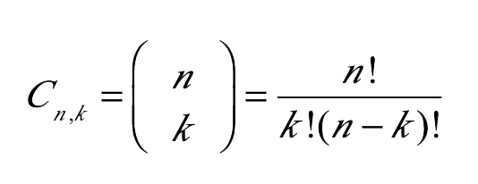Ejemplo 1
un grupo de 12 trabajadoresnecesitan formar una comisión de 3 personas para hablar con su jefe, ¿Cuántos grupos diferentes de personas se pueden seleccionar para dicha tarea?
Debemos elegir grupos de 3 de entre los 12, no influye el orden por lo que estamos frente a una combinación.
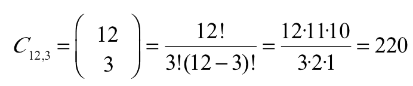
Por lo que podemos formar 220 grupos distintos para hablar con el jefe.
¿Cuántas manos diferentes le pueden tocar a un jugador de poker?

En una prueba de atletismo en la que participan 8 atletas se pueden clasificar sólo 3 para la final. ¿Cuantos grupos distintos de finalistas se pueden formar?